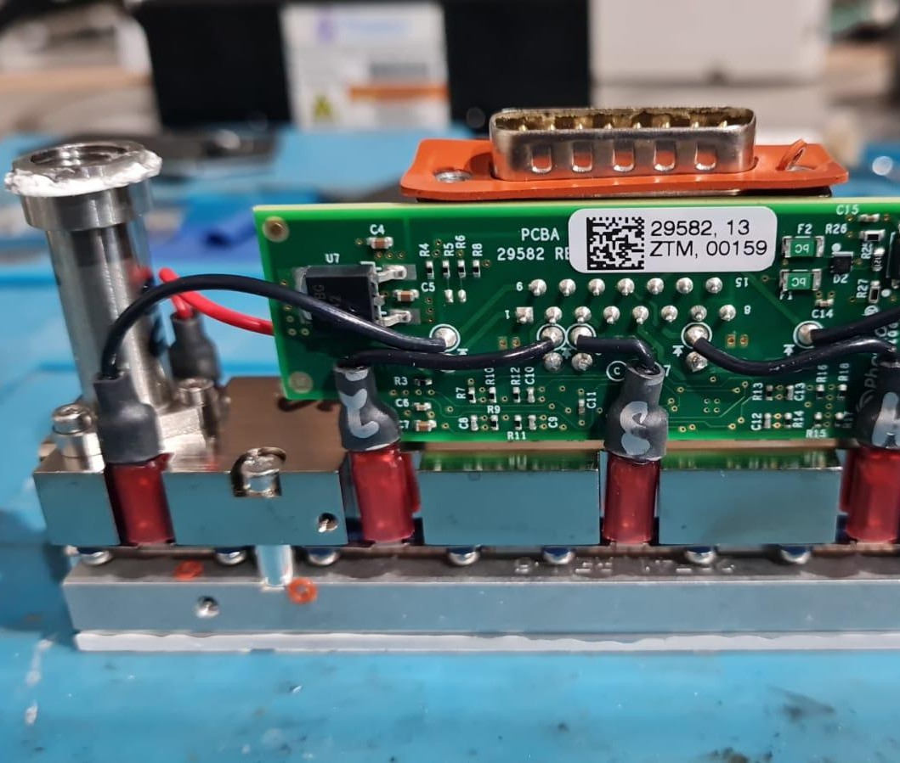
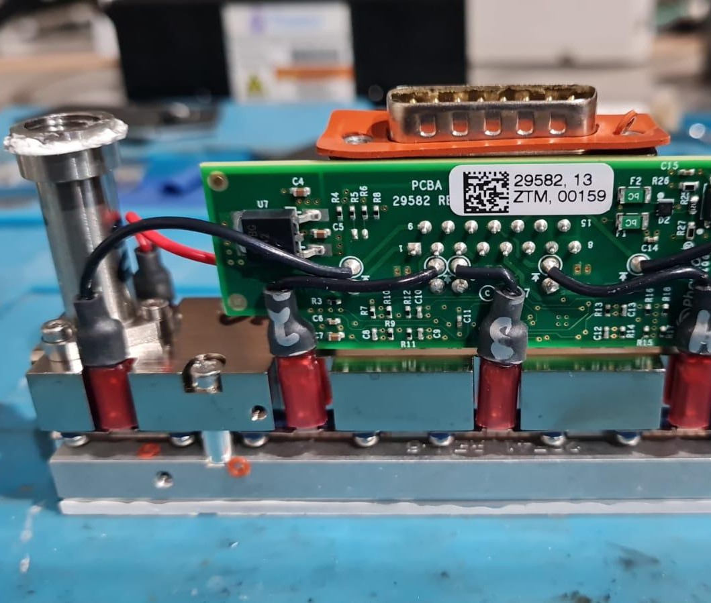

Autonomous Robotic Vehicle (AGV)
The Challenge: Develop a fully autonomous robotic vehicle capable of navigating complex hospital and industrial environments, overcoming difficult terrain and floor conditions while ensuring safety for nearby personnel.
My Leadership & Contribution: Led the complete mechanical and electromechanical design, integrating advanced LiDAR and stereo vision systems into a compact, efficient platform. Designed the electromechanical packaging and power distribution, and implemented safety systems for safe human proximity. This project highlights hands-on experience in building reliable autonomous AGVs for real-world operational challenges.


 
